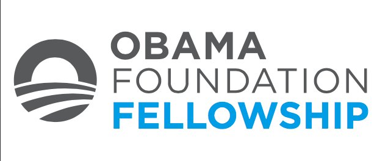
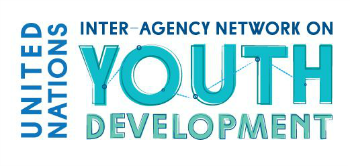
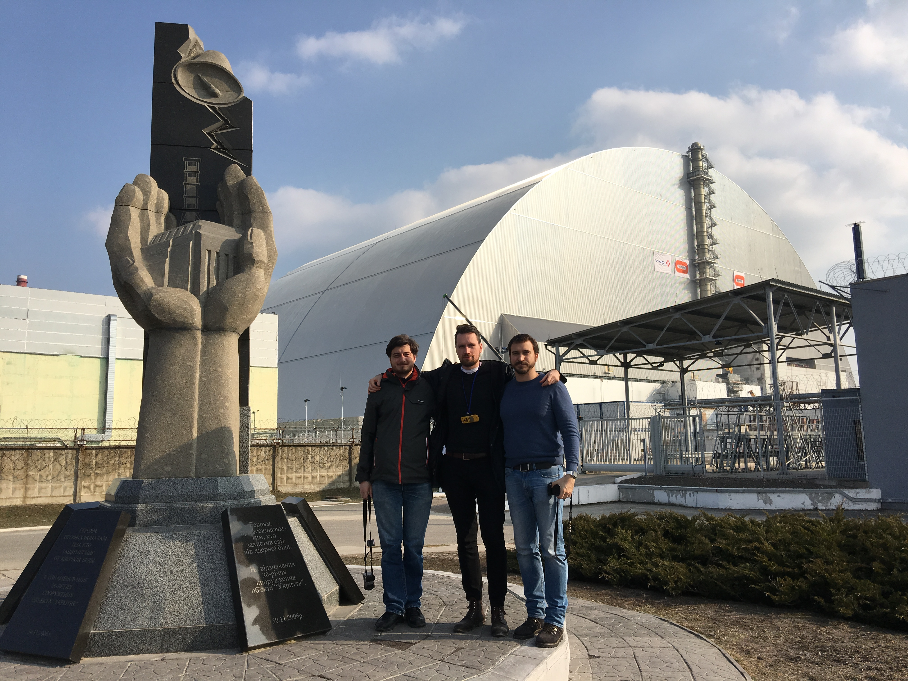
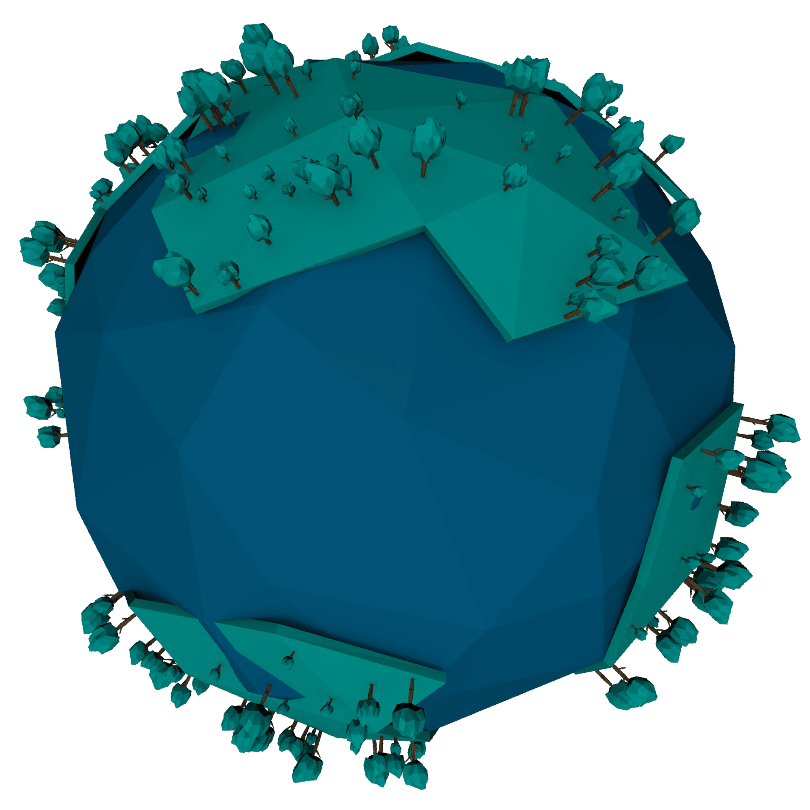
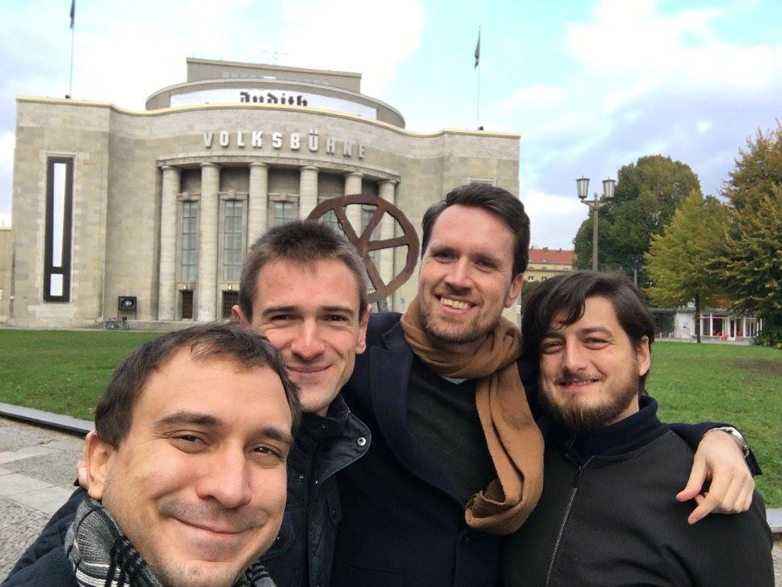

Copenhagen

[A few sentences from you: who came, how it came about, what it was like. Two or three paragraphs are enough.]
2014–2025
Most recent first. The entries from 2014 to 2017 are kept in the words they were published in; only spelling and punctuation have been tidied.
[A few sentences from you: who came, how it came about, what it was like. Two or three paragraphs are enough.]

The Obama Foundation Fellows will be a diverse set of community-minded rising stars — organizers, inventors, artists, entrepreneurs, journalists and more — who are altering the civic engagement landscape. By engaging their fellow citizens to work together in new and meaningful ways, Obama Foundation Fellows will model how any individual can become an active citizen in their community.
The inaugural class of 20 Fellows will be integral to shaping the programme and the community of Fellows for future years. For this first class, the Foundation is seeking participants who are especially excited about helping design, test and refine the Fellowship. The two-year, non-residential Fellowship offers hands-on training, resources and leadership development, and Fellows take part in four multi-day gatherings where they collaborate with each other, connect with potential partners and push their work forward.

The UN Interagency Network on Youth Development is currently developing a UN Strategy on Youth with the vision to see young people (from the ages of 10 to 30) recognised and supported in fulfilling life for themselves and unleashing their potential as positive and active agents of change, by 2030.
As a first step in this process, it created an open global survey addressed to each and every young person anywhere in the world. The survey is a way for the UN to collect information on what the top priority issues are for you, what the UN can do and how the UN can best engage with you in this process. Your opinions will be presented to the Inter-Agency Network and, to the best possible extent, feed directly into the draft of the strategy.
The survey closed on 23 June 2017.

31 years ago at exactly this time today, one of the most horrifying accidents in human history occurred at the Chernobyl Nuclear Power Plant in Ukraine. A couple of weeks ago, a few members of the UNYANET Alumni Board — Daniel, Halstein and Michael — did a field trip to the Chernobyl Exclusion Zone to find out more about what happened there. This article is a short reminder about the incident and also explains what it is like to be in the Chernobyl area, what you can expect there and how you can go there yourself.
In short: a safety test late at night on 26 April 1986 went horribly wrong and caused the core of reactor #4 to explode and release radioactive isotopes into the atmosphere. In the aftermath, the town of Pripyat and later a 30 km zone around the reactor became uninhabitable. Estimates of the human toll differ and are necessarily rough, because so much of it is indirect: around 56 direct deaths and some 4,000 indirect ones from cancer. In total it is estimated that as many as 600,000 people received elevated doses of radiation.
That was the most common question we got from friends. There are still highly contaminated areas with radioactive dust. The decisive factor in handling radiation is time: if you inhale a radioactive dust particle, it stays inside you and you keep receiving the radiation for as long as it remains in your body. As long as you stay on the usual tour tracks, there should be no danger of encountering radioactive dust, which is mostly contained in the sealed cellars of buildings.
We booked in advance with the operator Chornobyl Tour, which charges about US$130 per person for a one-day guided group tour — on a personal note, worth every penny. You need to get to Kiev first, ideally the evening before, since the tour starts in the morning near the train station. Don't forget your passport; you need it to enter the Exclusion Zone (… Halstein).
After some introductory videos on the bus and a two-and-a-half-hour drive, you enter the zone via a military checkpoint. There are three: at 30 km, the beginning of the zone, which includes the town of Chernobyl, where resettlers live and the administration of the zone is based; at 10 km from the plant, where it is safe to work but radiation is too high to live, and where a great many people work on dismantling radioactive material and moving it to end storage; and a third at the town of Pripyat.

The Global Challenges Foundation has started a US$5 million prize competition. It is seeking to identify new models of global co-operation capable of handling the most serious threats to humanity, including climate change, weapons of mass destruction and extreme poverty.
The competition is based on the premise that the system of global governance that evolved after the Second World War is no longer equipped to deal with 21st-century risks that transcend national borders and can affect populations anywhere in the world. The New Shape Prize asks entrants to design frameworks for international decision-making equipped to address today's global challenges, with a focus on climate change, major environmental damage, violent conflict — including nuclear and other weapons of mass destruction — and extreme poverty. Entrants are also asked to consider the implications of a rising world population.

UNYANET Alumni organised its fourth General Assembly in Berlin from 22 to 23 October 2016. Novamondo GmbH was kind enough to offer their office space for our workshop and the assembly.
At this year's meeting we discussed the future of UNYANET Alumni as a network of former UNYANET activists, professionals and UN experts. The goal was to evaluate the various options by including the different perspectives of our current members and of experts working in research, finance, public policy and other fields. We are positive that we managed to outline a future for UNYANET Alumni, established an action plan and distributed the tasks ahead among those willing to join us in our efforts.
The Prize for Innovation in Global Security seeks to reward the most inspiring, innovative and ground-breaking contributions to foreign policy and security from all relevant fields and disciplines. If you have an idea you feel passionately about, and know that its realisation will mean making a real difference to global security, then go ahead and enter the competition. The prize is a way to get ideas off the ground and innovative tools and products into the hands of those responsible for change.

UNYANET Alumni is currently developing a platform where young professionals can find information and application deadlines for the young-professionals programmes of the United Nations and near-UN entities such as the IAEA. The goal is a central overview of the various programmes, with links to the relevant pages, important dates and so on.
To do so, UNYANET Alumni is looking for a UN-YP Platform volunteer to support the effort of establishing and, above all, maintaining the platform for at least six months. Expected: a registered bachelor or master student, member of a UNYANET member association, fluent in English in writing and speech, experienced in working remotely and able to set priorities independently. Experience with content management systems and HTML is preferred but not required.

Three UNYANET Alumni members, who have been involved with the development of UNYANET from the very beginning, reflect on the five years since the first preparatory meeting in Oslo in November 2010.
On a cold November, 15 people from 10 different countries travelled to Norway to start a new youth organisation. Oslo was showing itself from its best side, with −10 degrees and a snowstorm. The organiser from Oslo tried, without much success, to convince the other participants that this was in fact not normal.
This was UNSA Norway's first international event, and a lot of planning had gone into organising and accommodating everyone. Norway is an expensive country, and much effort went into keeping costs low — participants were put up in cosy Norwegian apartments rather than budget hotels. Once their cold throats had warmed up on the university radiators, the group turned talkative and engaged, helped along by some homemade "Norwegian" food. Norway is not famous for its cuisine; the most common Norwegian dish is a frozen pizza called Grandiosa.
After some fast creative workshops, the whole group was busy establishing new projects we could work on together. One highlight of the first day was the "Global Village", where everyone brought food and drink from their own country. As most participants were not too excited about walking around Oslo in a snowstorm, the evenings were spent in the host's apartment near the centre, with some local brew in front of the fireplace. Someone kept insisting they should all come back in spring, when Oslo "turns into a green paradise".
The next day we could see many of the projects coming to life, and everyone realised we simply had not had enough time together. After long hours of organising, UNYANET was established. On the last day we were sad to see each other go, but certain it would not be the last time. And we had all decided to meet again in Vienna the following year. Thank you, everyone, for five great years.
The idea. The thought that gave birth to UNYANET is five years old. Back then we had the idea to bring together UN youth from many countries to cooperate on international projects, so we chose to invite all the organisations we knew to a meeting. It was a cold November week in most parts of Europe, so we wanted to meet somewhere warm and comfortable — which is how we ended up in Oslo, Norway. Surprisingly, when I think about it today, a meeting held in −20 degrees and a snowstorm really warms my heart. It represents everything we fought for and a common truth: we are young people who want to do something, we want to help make the world a better place, and we do it no matter how bad the weather is, no matter how strong the wind blows against us.
The people. That meeting was not only the first of its kind; it also led to friendships that live on today. There was Pau from Spain, who was enthusiastic about just about anything; that crazy dude from Norway, Halstein, who was absolutely not freezing in that weather; Honna from Finland, who voluntarily stepped outside with me for a cigarette, all the time; Daniel from Switzerland with all his crazy meeting methods and group games — and they worked. And of course many other inspiring people; sorry if I don't mention everybody.
How we did it. So we had the idea and we had the people, but what next? We knew we could not just establish an international organisation. We started working on scattered project ideas and later carried out those with the most support. The important part is that the seed planted at that meeting was put in a pot first. We established our own rules and our own structure, bottom-up — you cannot throw a seed into a snowstorm and hope it will grow. That plant was groomed until Vienna and then planted into the wild. Today, that small meeting with a bunch of young people somewhere in the north has turned into a tree that connects thousands of them.
I had been appointed External Relations Officer at UN Youth Finland that year. The presidency presented us with an email from some dudes called Daniel and Michael, asking whether we wanted to send a participant to a youth seminar in Oslo. What? Something happening within a two-hour flight radius of Finland? Of course I wanted to go.
When I think about us five years ago, I would like to say we were just a bunch of misfits trying to figure out how to participate in shaping the world we live in. But that would be wrong. We have actually been serious right from the start. It now seems that, all along, we have been quite aware of what we want and how we want it done — greatly thanks to Daniel and Michael, who took us on board their vision, its formation and execution.
We have failed and learned, we have lost inspiration and motivation, and we have sworn we would quit organisation work for good. We have also worked hard, succeeded and taken pride; we have made friends and laughed; and we have become more inspired and determined than ever. I want to believe that we have created something significant — but when it comes to youth empowerment, the work is nowhere near finished. Long live UNYANET and UN Youth around the world.

UNYANET Alumni kicked off the third term of the association with the General Assembly 2015 in Bucharest, Romania, on 12 September. In keeping with the custom of previous years, the meeting was held during UNYANET's own General Assembly. The get-together of the two organisations was a good occasion for networking as well as for sharing views and news.
UNYANET Alumni elected a new board with Daniel Hardegger as President of the association. The assembly also discussed plans for the future. Among other things, UNYANET Alumni intends to intensify relations with UN agencies and to celebrate the five-year journey that led to the establishment of both UNYANET and the alumni association.

We are happy to inform you that the UNYANET Alumni General Assembly 2015 will take place in Bucharest, Romania, from 11 to 12 September 2015. Please note that UNYANET is holding its own General Assembly in Bucharest at the same time.
Friday, 11 September — arrival day. 18:00 networking dinner with UNYANET and social programme.
Saturday, 12 September — formal meetings. 10:00–12:00 workshop, 12:00 lunch, 13:00–15:00 formal General Assembly with voting and reports, 15:00 free afternoon or sightseeing in Bucharest, 20:00 evening entertainment with UNYANET.
Sunday, 13 September — departure day.
All UNYANET Alumni active and passive members are invited to participate.
Registration closed in 2015.

UNYANET Alumni is proud to announce that its experts page is now available to the public. We decided to create an open page for everyone in order to share the knowledge, expertise and experience of our members with those who need it. You are able to see where our experts are stationed at the moment and what their field of expertise is. If you need help in an area, you can simply contact us and we will put you in touch with one of them. We will constantly update the database with new experts from all over the world as well as new fields of expertise.
The experts page is no longer online.

UNYANET Alumni is the new association for all the former UNYANET activists and supporters who have finished their studies and are ready to take their next steps after their youth activities, without losing their connection to UNYANET.
When a chapter of your life ends and a new one begins, you often have two feelings at once. The first is the joy and excitement of the things to come — like visiting a new city, or travelling in a region you have always wanted to see. A new chapter is also an opportunity to try out things you might not have been able to do before. The other feeling is the sadness of thinking about what has ended: the friends you might not see again for a long time, the projects you invested a lot of time in, or the things you left behind because your suitcase was not big enough.
That was exactly the situation we were all in last spring. We had been active for several years in the UN youth community, established and participated in various Model UN conferences, organised workshops and seminars, and created the worldwide UN youth network UNYANET. But we felt the need to move on and to give others the chance to make their own experience and bring their knowledge and dreams into UNYANET and the projects we had created. At the same time, we did not want to leave everything behind: the ideas we still had in mind, the constant exchange with like-minded people, and the friendships we had gained over the years. That was the moment when we decided to create UNYANET Alumni.
UNYANET Alumni is primarily an association for former representatives and members of UNYANET who have finished their studies and are starting the next chapter of their lives. We have two primary aims: to support UNYANET with expertise and resources where possible, and to stay connected with each other.
UNYANET Alumni, founded on 23 August 2013 in Ljubljana, Slovenia, is the alumni association of the United Nations Youth Associations Network (UNYANET). The board includes former UNYANET actors who have finished their studies and are now working in their fields of expertise. The main aims of the organisation are to support UNYANET in its causes and to contribute to topics debated in the international community and the UN.
Almost certainly. Photos, minutes, presentations and stories from those years are welcome and will be added. How that works.